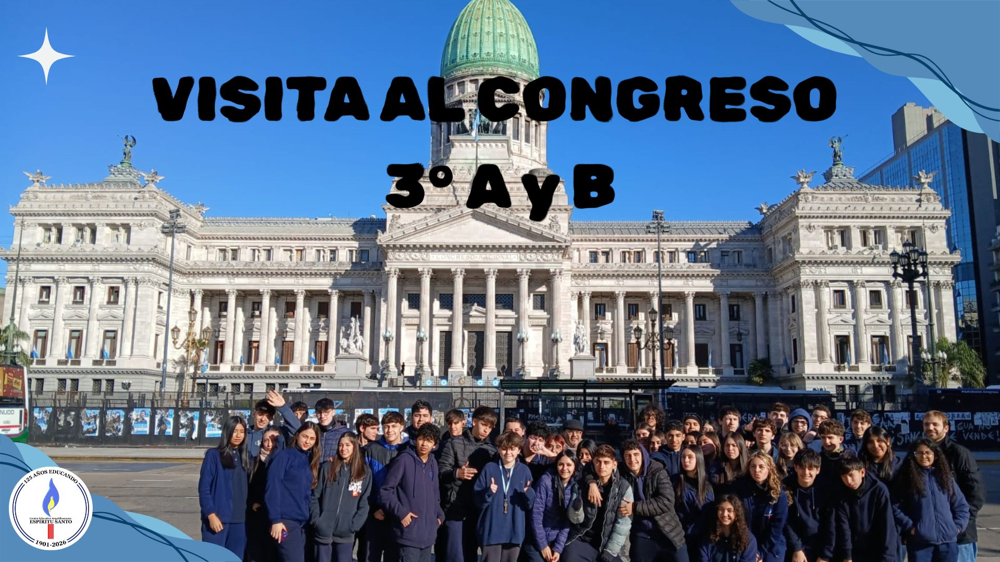
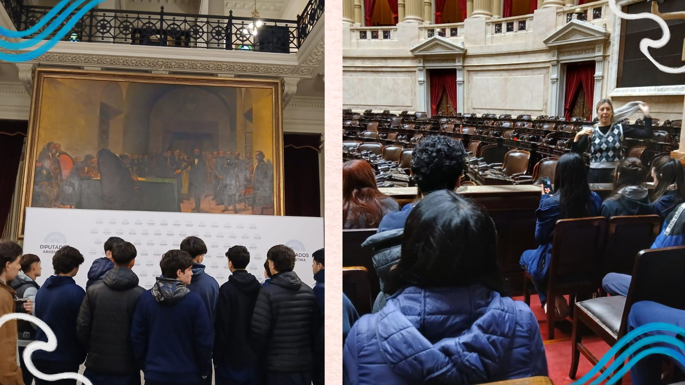

Visita al Congreso Nacional 3º A y B
Por Jardon Chaine, Tabatha Ariana y Ricciotti Santiago

El día 19 de mayo junto a los dos terceros,el profesor Guillermo y El rector Ricardo fuimos al congreso a tener una visita guiada y conocer más sobre nuestra historia. Recorrimos las dos cámaras junto a un guía que nos explicaba cada duda que teníamos y nos contaba más sobre cómo está formado nuestro gobierno. también recorrimos la biblioteca donde pudimos ver los diferentes artículos nacionales de importante valor para el estado nos quedamos con el lindo recuerdo de la actividad que nos proporcionó el colegio para nutrir más nuestros conocimientos.
